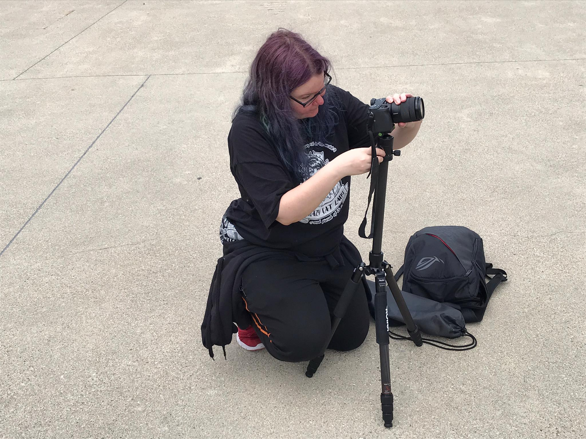
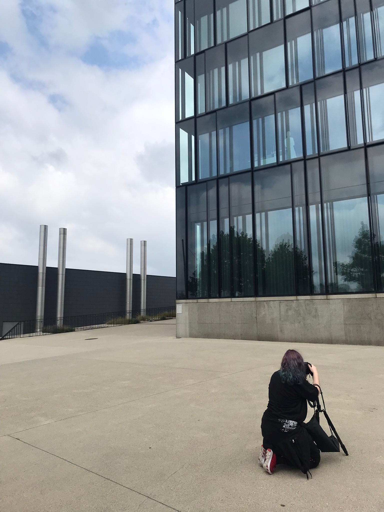
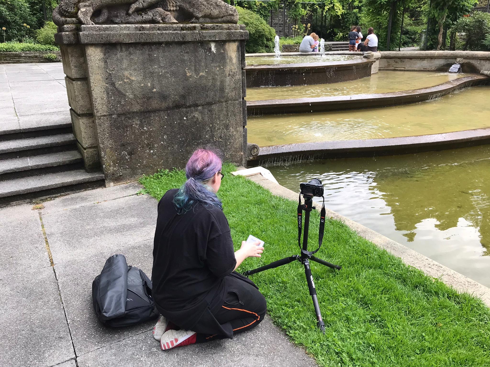
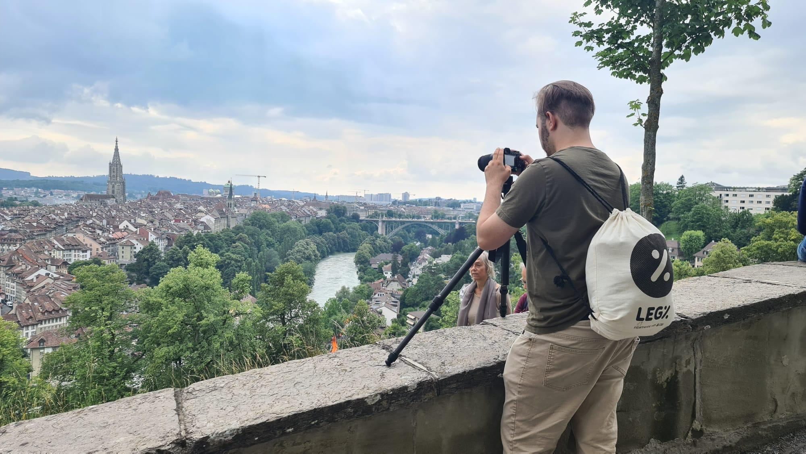
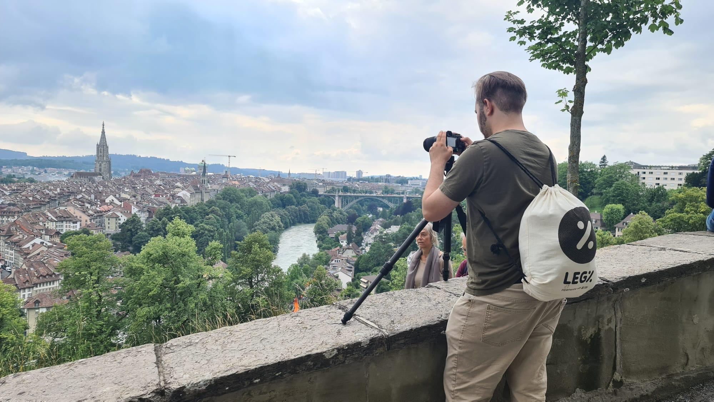

FOTOGRAFIE
Fotografietag in Bern
Zusammen mit der Mediamatiker Mia Koenig, bin ich im Juli nach Bern einen Tag lang die Stadt fotografieren gegangen. Sie erklärte mir oben auf der grossen Schanze die verschiedenen Kameraeinstellungen, wie Verschlussziet, die Blende, Brennweite und ISO und wie sie das Lichtverhältniss und die Schärfe eines Fotos beeinflussen. Mir wurde schnell bewusst wie schwer es ist ein Bild mit guter Schärfte und gleichzeitig optimalem Licht zu schiessen. Vor jedem Foto musste ich ganz genau kontrollieren, ob die Einstellungen für das jeweilige Foto auch passen würden. Nach der Theorie machte ich mich daran machte die ersten Bilder zu schiessen. Wir unternahmen eine Tour von der grossen Schanze bis hin zum Rosengarten und fanden einige interessante Bildobjekte. Ich versuchte mehrere Gebäude in Richtung Sonne zu fotografieren, doch Mia machte mir bewusst dass die Bilder nicht gut zu bearbeiten wären. Sie lernte mich ausserdem, wie ich mein Stativ am besten gebrauchen soll.
 

Zuerst etwas unsicher, doch mit Zuspruch von Mia beherrschte ich die Kamera immer ein bisschen besser. Mir wurde immer bewusster in welcher Position und in welchem! Licht ich am besten stehen sollte. Ich getraute mich ein paar Bilder mit längerer Verschlusszeit beim Rosengarten zu schiessen um dem Wasser einen sanften Effekt zu geben.


Es war ein wunderschöner Tag und ich habe viel über die verschiedenen Kameraeinstellungen, gute Bildkompostion und wie wichtig das Wetter oder die Lichtverhältnisse bei einem Foto sind lernen können. Dies war meine erste Erfahrung im Umgang mit einer professionellen Kamera und nach unserem Fototag wäre ich am Liebsten direkt in einen Laden gerennt und hätte mir selber eine gekauft!
Nachdem wir alle Bilder geschossen hatten gingen wir zu Mia nach Hause und bearbeiteten die Bilder in Photoshop. Die fertig bearbeiteten Bilder können Sie in der Galerie finden.


 
